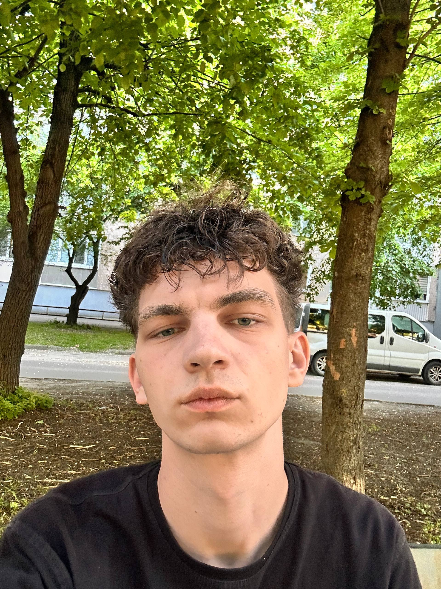

Як побудована сторінка відеосервісу
Веброзробка · FlexboxШапка, бічне меню і стрічка відео займають різну кількість місця. Flexbox допомагає розташувати їх так, щоб меню зберігало ширину, а стрічка заповнювала решту екрана.
Навчаюся на четвертому курсі за спеціальністю «Комп’ютерна інженерія». Тут зібрав свої роботи з веброзробки — від верстки клавіатури до сторінки відеосервісу.
Завантажити резюме
Шапка, бічне меню і стрічка відео займають різну кількість місця. Flexbox допомагає розташувати їх так, щоб меню зберігало ширину, а стрічка заповнювала решту екрана.
На широкому екрані дві картки зручно читати поруч. На вузькому кожна отримує окремий рядок, а фото у вступі переходить над заголовком.
Навчальна верстка за структурою YouTube з верхньою панеллю, бічною навігацією та картками відео.
Макет клавіатури з основним і цифровим блоками та клавішами різної ширини.
Сторінка планера для навчальних справ. Поділ на окремі поля допомагає побачити розклад і знайти потрібний запис.